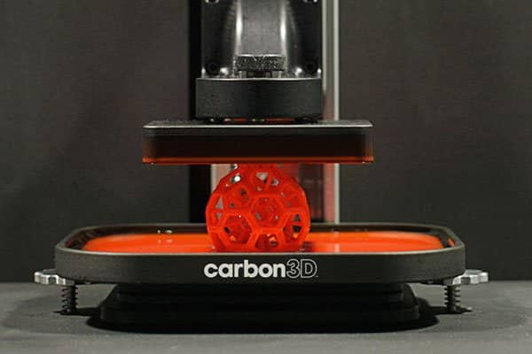

About This Site
Injection continuous liquid interface production (iCLIP) is one of the most promising emerging technologies in additive manufacturing with its increase in speed, resolution, and scalability suited for mass production in medical and industrial applications.
This fantastical sounding technology isn't the result of pure imagination, but instead years of engineering development. This site explores that development through three key studies, tracing iCLIP from its first publication in 2022 through the most up-to-date research available today.

The Research
This article is a good introduction to iCLIP as a technology. It is one of the very first research papers published about it. It serves as a snapshot of where the technology was, covering why iCLIP is advantageous over other 3D printing methods and dipping into the differences between it and its predecessor, CLIP.
This next article is by the same main researchers. It is specifically geared towards the computational aspect of 3D printing, focused on their simulation for this technology. It ultimately shows great progress in the couple of years after the original research article was published, and makes clear that the possibilities for this technology have still yet to be fully discovered.
This article out of Stanford will most likely be the most advantageous research paper, at over 100 pages of detail. It is the most up-to-date and most in-depth that researchers currently have to offer on this technology. It focuses on not only what iCLIP can do for the 3D printing industry, but also its limitations and what can be improved in the future.